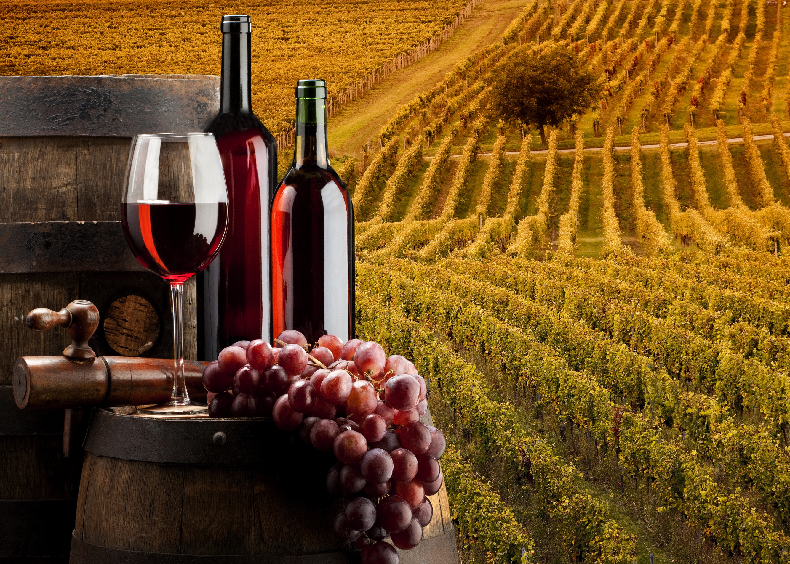

Terroir e Uvas

Terroir
Esse termo de origem francesa é o que define uma extensão limitada de terra. Ao longo do tempo, o universo vinícola foi se apropriando do conceito. Foi assim que Terroir passou a compreender características específicas referentes à geografia, à geologia e ao clima de um lugar.
Terroir é também o responsável pelos detalhes finais e íntimos do caráter de um vinho e pelas diferenças entre dois engarrafamentos de um único vinhedo feitos da mesma maneira pela mesma pessoa, ou seja, a mesma uva pode se adaptar a diferentes regiões e ainda mudar suas características.
Uvas
| Características |
| Cor da casca |
Uva |
Região/País |
Aromas |
Vinho |
| Branca |
Chardonnay |
França, Estados Unidos |
Frutas cítricas |
Encorpado |
| Branca |
Sauvignon Blanc |
Bordeaux |
Ervas |
Corpo leve a médio |
| Branca |
Pinot Grigio |
Itália e França |
Frutas |
Corpo leve |
| Branca |
Riesling |
Alemanha |
Floral intenso |
Acidez marcante |
| Tinta |
Cabernet Sauvignon |
Bordeaux, França |
Frutas e especiarias |
Encorpado e intenso |
| Tinta |
Syrah |
Vale do Rhône, França e Austrália |
Frutas |
Encorpado e intenso |
| Tinta |
Zinfandel |
Croácia, Estados Unidos |
Frutas e especiarias |
De corpo médio a encorpado |
| Tinta |
Pinot Noir |
Croácia, Estados Unidos |
Frutas e toques de especiarias |
De corpo leve e acidez marcante |
Voltar ao topo